Hieroglyphs
and the Written Record
Page
2 of 5
Written
language is part of the cultural code, which is as subtle and as complex
as any code for writing secret messages. Texts themselves are artefacts
as much as any other ancient object, and need to be understood as such,
rather than being simply translated word for word. Hieroglyphs record
the ancient Egyptian language, using a mixed system of sound and picture
signs.
The
Egyptian language evolved over 3000 years, as Egyptian society changed.
Like any language, written Egyptian was different from spoken Egyptian,
and changed more slowly. Different forms of the language and styles of
script were used for different purposes. In the Christian Period, Egyptian
began to be written in a version of the Greek alphabet called Coptic.
 Reading
hieroglyphs Reading
hieroglyphs
Scripts
What
could be written
The
unwritten record
Scribes
Reading
Hieroglyphs
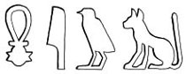
The
hieroglyphic writing of 'cat' |

Statue of Senwosret III, EA 686
(on display in Room 4) |
|
Egyptian
hieroglyphs
are
written with picture signs, and this led people to assume it was
a symbolic system of picture writing rather than a way of recording
the sounds of the ancient Egyptian language.
Hieroglyphs record this language (which belongs to the AfroAsiatic
family) with a mixed system of sound signs and picture signs. The
sound signs record the consonants of the language, but not true
vowels. Occasionally, the versions of Egyptian words that are recorded
in the scripts of other cultures help us reconstruct the missing
sounds.
The sound signs are pictures which have acquired a sound-value from
the word for the object they represent: thus a picture of a mouth,
in Egyptian ro, writes the letter r. Some signs write
one letter, some two or three. Some signs write whole words; picture
signs placed at the end of most words (called `determinatives')
help indicate the category of words. Although hieroglyphs can be
read either from left to right or right to left, the bird and animal
signs almost always face the start of the line.
The
word for `cat' has the letters miw. Egyptologists pronounce
the written letters as miew, but the word survives in Coptic, when
the vowels are written as emou; this suggests that actual sound
of the word was probably something like imayu. The word is written
with sound signs mi + i (a complement clarifying the
reading of the first sign) + w, followed by a picture (the
`determinative' sign) showing a cat.
A
hieroglyph showing a cow's ear is used to write the word for `hear'
sdm. A sound sign for m
(an owl) follows to show how to read the sign. The pictures of,
and signs for, hearing are similar but are distinct. In scenes,
the idea of hearing is shown with an image of a human ear; in one
stela human ears are shown to represent the hearing of a god, while
a prayer for him to `hear' is written with the cow's ear. Kings
who were meant to listen to the concerns of their subjects were
represented in statues with unnaturally large ears.
|
Scripts

A
royal temple inscription from Deir el-Bahri, EA 782 |
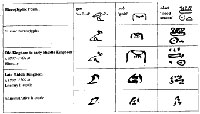
Cursive
signs from R.B. Parkinson & S. Quirke, Papyrus. Egyptian Bookshelf
(London BMP 1995) |
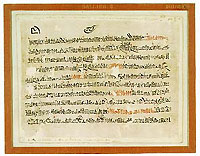
Hieratic
Papyrus Sallier II sheet 1, EA 10182.1 |
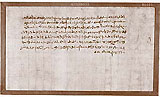
Early
demotic loan agreement, EA 10113 |
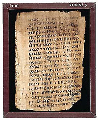
Page
of a Coptic codex , EA 71005.3.
|
|
| From
earliest times the Egyptian script was employed on a wide variety
of surfaces. The most prestigious form of hieroglyphs from the Old
Kingdom onwards was as carefully delineated, detailed pictorial representations;
these were executed as part of royal and courtly works, usually with
royal and religious content. In extreme cases, the full pictorial
aspect was given free rein, although such elaboration generally concerned
detail rather than the basic shape of a sign.
The
ideal was to have each sign carved in relief, with its internal
details incised, and then painted or inlaid. Such an elaborate and
slow method of production meant that the signs themselves were a
display of wealth and prestige, regardless of their meaning and
the significance of the text they recorded. Hieroglyphs were also
carved in sunk relief, often with incised details, or simply carved
as silhouettes and painted monochrome, producing a similar effect
to carved hieroglyphs that had been inlaid. Both the forms of individual
signs and spelling vary over time and with contexts, but also between
groups of artists.
Cursive
(joined up) versions of hieroglyphs, written with ink and a reed
pen, are first attested in the 0th Dynasty (c. 3500 BC). For the
Old Kingdom and later, the normal cursive form of the script that
evolved out of early writing with ink is termed `hieratic', from
the Greek word for `priestly', since it was later used in the Greco-Roman
Period only by priests.
The
style of script depends on the date and the type of a manuscript.
The forms of script embody and run parallel to a hierarchy of writing
uses. By the mid-Middle Kingdom hieratic had developed into two
varieties, formal and administrative. A less joined up form was
also retained (now known as `linear hieroglyphs') as a careful `book-hand'
for temple and funerary manuscripts.
In
hieratic, the pictorial aspect of the script is considerably reduced.
There is a tendency to write words out more fully, with more phonetic
signs. The cursive script was the normal medium for reading and
writing for everyday purposes.
The
Demotic script is a more cursive development of the hieratic script.
It is recognised as a separate script from the middle of the reign
of Psammetichus I (664--610 BC), and by 525 BC it was the standard
script for business and legal affairs throughout the country; hieratic
was retained for writing religious texts. The word `demotic' was
used by the Greeks to describe the everyday language of the Egyptians
from the seventh century BC (Greek demos, `the people').
By the second half of the second century AD, however, demotic had
also become a learned script.
The
first significant attempts to write the Egyptian language with Greek
letters date from the second century AD. Inevitably an alphabet
that had evolved for the Greek language needed some adaptation for
writing Egyptian, and several letters were added, derived from demotic
signs. Many Greek words were also imported into the language.
By the mid fourth century, Coptic was used for literary works and
private letters. Arab dominance eventually caused Coptic to die
out as a spoken language by the fifteenth century, but it survived
as a liturgical language.
|
What
Could Be Written
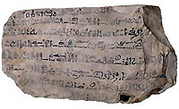
Ostracon of the Tale of Sinuhe, EA 5629
|
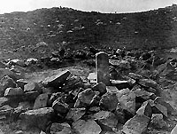
Stela
and altar (EA 694-5), as discovered at Serabit el-Khadim (Photograph
by Flinders Petrie). Copyright: Egypt Exploration Society
|
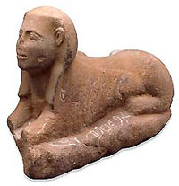
Sphinx with proto-Sinaitic inscription, EA 41748
|
|
As
in any society, there were different kinds of text in Ancient Egypt:
in the Old to New Kingdom hieroglyphs were used for display and
commemoration; hieratic was used for administration and records,
technical treatises, funerary and cult texts, letters, and entertainment
literature. Each sort of text had a particular style of language,
and also required a different code of conventions for interpretation:
each type of text has to be read in the right way.
The masterpiece of Egyptian writing, The Tale of Sinuhe is
a fictional poem, like Paradise Lost, and is not a work of
history, as Egyptologists used to think. Modern readers lack the
key to the cultural code, and can often misunderstand: all reading
and interpretation is an appropriation of the original meaning by
the reader. Understanding texts without knowing their living context
is difficult, like hearing cricket commentary without seeing play
and without knowing the rules of the game.
Although
writing was important in Egypt, and has been well preserved thanks
to the Egyptian climate, it only described certain aspects of life:
much was not written about in certain contexts. For example, sexuality
and private religious activity rarely features in texts. All records
were made by the upper classes, so only their view of the world
is preserved in words. Also, only texts from certain contexts, mostly
funerary ones, survive. The texts are part of the material remains
of ancient culture, and their silences can only by filled by archaeology
or by comparative studies. Writing preserved information to do with
practical concerns, but it was not simply a record of spoken messages.
Texts placed on statues and high up stone walls were written in
hieroglyphs - a script few people could read - and were often placed
in inaccessible places. Inscriptions such as these were not publications
meant to be read by everyone, but were a means of commemorating
events for eternity. One complete monument from Sinai was discovered
by Flinders Petrie on a hillside at Serabit el-Khadim in Sinai.
A rough wall of stone surrounded a stela and altar erected by two
officials on a mining expedition for the king. Although the stela
is modelled on funerary inscriptions, this monument was not their
tomb, but was intended to associate them with the cult of the nearby
temple of Hathor, Lady of Turquoise.
A
strange script is known mainly from a small number of votive offerings
and inscriptions at this site, including a sphinx with inscriptions
in both the Egyptian hieroglyphic and Proto-Sinaitic scripts. The
signs are modelled on Egyptian hieroglyphs, but derive their sound-values
from Semitic words. It has been claimed that the ghosts of the hieroglyphs
live on in our own roman alphabet, since this script may have influenced
the Semitic scripts, including Phoenician, which was later adopted
by the Greeks. The Greek alphabet indirectly inspired the Latin
alphabet, which has been adapted to write the majority of the world's
languages.
|
The Unwritten Record
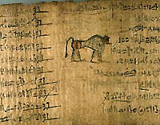
Illustration between the columns of a hieratic literary text, detail
of EA 9994/5 |
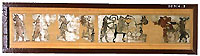
Humorous
papyrus, EA 10016/2 |
Many aspects of culture are not attested
in surviving writings, and things like humour were not prominent in
official records, though some humorous papyri survive. Much of life
remained unwritten, and differences between modern and ancient Egyptian
ideas of what could be written or represented are immediately apparent.
For example, explicitly sexual motifs had a relatively limited role
in formal art and literature, apart from coded images or metaphors,
although direct representations and references to the gods' sexual
acts and potency occur in sacred contexts. Sexual activity between
humans is only represented directly on less formal artifacts, such
as sketches on spare flakes of limestone (`ostraca'). Funerary and
religious offerings to do with sexuality are often uninscribed and
can thus be difficult to interpret: for example, fertility figurines
placed in tombs have often been wrongly assumed to be children's toys.
|
Scribes
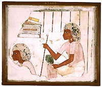
Wall-painting
from a tomb, EA 43468 |
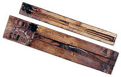
Scribal
palettes, EA 12784
|
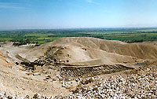
The village of Deir el- Medina. Photograph ©N.C.Strudwick
|
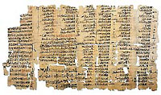
Papyrus
with list of dreams and their interpretation, EA 10683 |
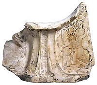
Headrest of Qenhirkhepeshef, EA 63783 |
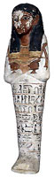
Shabti
of Qenhirkhepeshef, EA 33940
|
| The
status of literacy was very high, and writing ability was essential
to attain rank as an official. The social prestige of writers and
copyists, called scribes, was consequently high. Probably less than
one percent of the population was literate, and thus writers formed
the elite of society. Very few women were literate.
Writing was part of governing the country. Scribes also formed a
group of civil servants and bureaucrats carrying out the government
of the king and his high officials. Scribes are often shown in official
works of art, including models of scribes reckoning the goods of
the wealthy dead and scenes of them at work on tomb walls. Scribal
equipment was often placed in tombs as a status-symbol and a sign
of the tomb-owner's literacy/ability to read and write.
Statues placed in temples and tombs sometimes show high officials
in the characteristic cross-legged scribal posture and in the act
of reading and writing. Although writing ability was necessary to
be an official, these officials were much higher than simple scribes,
and the image of them is not realistic; instead it may show them
acting as a trusted scribe to the gods.
The
scribes' equipment was a tool-kit, the original form of which was
shown in the sign used to write words for writing; it comprised
a bag or pot, ink wells and a pen-holder for pens. Later these were
combined into a single box, the scribal palette. The main writing
surface was papyrus (made from the reed-like papyrus plant), but
leather, wood and sometimes metal and stone were also used. Scribes
wrote in hieratic for day to day purposes, and hieroglyphs were
a more specialised ability: we can still see spelling mistakes and
slips, especially when the scribe was copying a text from hieratic
to hieroglyphs.
The
village of the men who decorated the royal tombs in the Valley of
the Kings from 1500 -1100 BC has been discovered at Deir el-Medina.
Many texts, artefacts and buildings from the village are preserved,
especially from the huge artificial pit used as a rubbish dump:
these give us an impression of the life of this, slightly untypical,
village, and occasionally reveal something of the personalities
of the ancient inhabitants. A few individual scribes are well known,
with their recognisable handwriting, tastes in history, styles of
letter-writing, and fondness for composing poetry.
For
example, Qenherkhepshef, a `Scribe of the Royal Tomb' at Deir el-Medina,
is attested from 1250-1208 BC. He was accused of bribery, and of
behaving badly towards his subordinates; his own letters sound confident
and self-assertive. He was a man of considerable learning, with
an interest in historical matters, who accumulated a considerable
library of papyri that has survived and was discovered among the
tombs around the village. His handwriting is very messy.
|
Pages 1
| 2 | 3 | 4
| 5 |
|